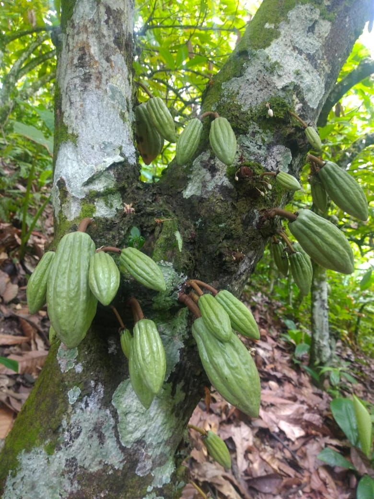

Producto Estrella
Cacao en Grano Seco
Granos fermentados y secados al sol, seleccionados para chocolatería fina, bombonería y procesamiento artesanal.
Venta al mayor y detal Solicitar Cotización"Todo plantado desde el corazón, a la tierra."
Propietarios: Carlos Duque y Lourdes Sambony | Tel: 0424-4713859 / 0414-7486762
En las montañas de Otovales, Municipio Ayacucho, preservamos el legado agrícola familiar que data desde la época del ferrocarril Táchira–Maracaibo, impulsando nuestras cosechas desde 2014.
Cultivamos granos de cacao selectos bajo sombra natural, conservando las especies del ecosistema montañoso y asegurando una materia prima pura para chocolateros artesanales.
Además de nuestro cacao de origen, nuestras parcelas producen aguacates, café, guineos y cítricos frescos, cosechados por cuadrillas locales comprometidas con la calidad.
Ubicada en el Sector Caño Colorado, Vía Otovales, camino Los Cachos (San Juan de Colón), Finca La Chocolata nació en 2014 con el propósito de rescatar, ampliar y fortalecer el cultivo del cacao en la zona montañosa del Estado Táchira.
A través del esfuerzo familiar y la apertura de rutas rurales entre la montaña, hoy conectamos directamente nuestra cosecha con pequeñas y medianas empresas que transforman nuestro cacao en chocolate de alta gama.
Facilitar y fortalecer el cultivo de cacao de manera integral, mejorando la calidad de vida de los campesinos y agricultores de la zona como alternativa sostenible para conservar el ecosistema.
Posicionar nuestro cacao promoviendo su producción hacia pequeñas y medianas empresas que llevan el producto a otro nivel, en cooperación con los agricultores de la región.

Cada lote pasa por un riguroso control supervisado en finca para garantizar aroma, pureza y rendimiento.
Manejo ecológico de los lotes en montaña, protegiendo la biodiversidad y los suelos fértiles de Otovales.
Recolección manual de mazorcas en su punto óptimo de maduración por nuestras cuadrillas agrícolas.
Proceso tradicional al sol que desarrolla las notas aromáticas características del cacao tachirense.
Entrega directa de lotes seleccionados para artesanos chocolateros, comercios y consumidores.
Producción agrícola directa desde Finca La Chocolata para empresas y hogares.
Granos fermentados y secados al sol, seleccionados para chocolatería fina, bombonería y procesamiento artesanal.
Venta al mayor y detal Solicitar CotizaciónCultivado en las zonas altas de Otovales bajo sombra, con aroma intenso y sabor tradicional andino.
Disponible por temporada Consultar DisponibilidadAguacates criollos, limones y mandarinas cosechados de forma natural sin químicos agresivos.
Entregas en San Juan de Colón Consultar DisponibilidadProducción constante de guineos frescos provenientes de nuestras parcelas diversificadas.
Disponible todo el año Consultar Disponibilidad¿Eres chocolatero, comerciante o buscas cacao de calidad en el Táchira? Contáctanos directamente sin intermediarios.
📍 Dirección: Sector Caño Colorado, Vía Otovales, Camino Los Cachos, San Juan de Colón, Municipio Ayacucho, Estado Táchira.
👨🌾 Propietarios: Carlos Duque y Lourdes Sambony
📞 Teléfonos / WhatsApp: 0426-4713859 | 0414-7486762